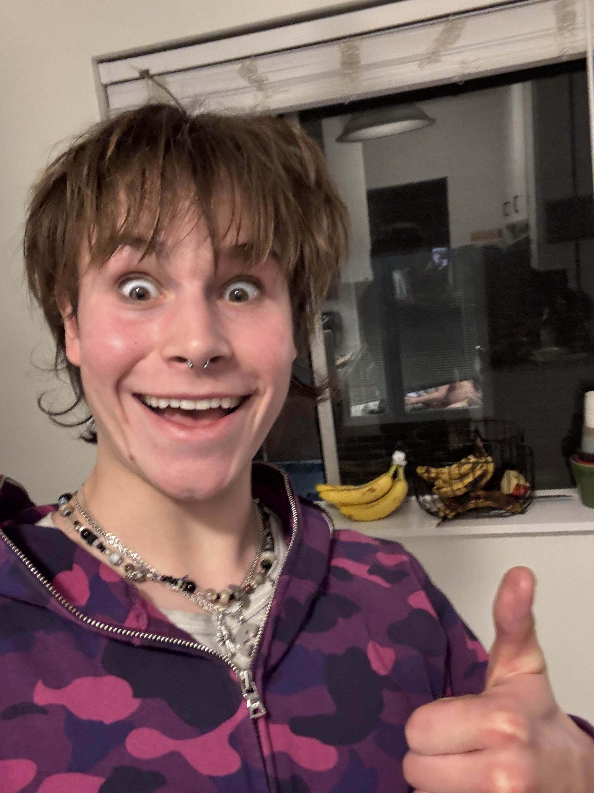

Another week.. Another tuesday. Another tuesday, Another pilgramige to the lawless land of primate. And boy am I stoked.
Allow me to paint you a picture. It's 8am in a cubicle of the quiet section of odegaard listening to a mix of Blink-182, Venetian Snares, Daft Punk's Alive 2007, and Severslvt. I'm off no breakfast, 2 Coffees, cinnamon zyns, and a 54mg ritalin. Absolutely fucking locked in. This concoction got me fantasizing about increasing shareholder value. May I say I've got #quantdreams.
Aside: Have any of you guys had feelings of gender envy? Like sometimes I wish I was born a girl but I have no desire of transitioning or further feminizing my appearance.

I come to you all with some news. I'm sure some of you remember the unfortunate sight of my neighbor from last time (pictured below).
I am happy to share that pedro and I confronted him last week. Our lovely neighbors welcomed us into their apartment complex and led us to his door. Pedro took the leap of faith and knocked on his door. The foreboding weight in the air made my heart race like a stallion. He opened the door. He looked upset at our interruption of his private moment. But we were not deterred. Pedro, with empathy, requested he close his blinds all the way. He shut the door on us without a word. But, we prevailed. He has not been sighted since.
Intention setting:
This week, I implore us all to be a little more intentional with who we spend our time with, more appreciative about said time, and more vocal about it all.
Youtube break from all this reading:
As per usual, a word from Pedro:
To be or not to be
I fell and scraped my knee
I’m down but you pick me up
Oh how I love you monkey pub
One beer two beer three
Oh beer please get inside of me
Shall we dress up in our indie-est outfits, slap on our cheeriest smiles, and make this a night worth remembering? I think yas.
Let's take some thirst traps, send questionable texts, and live life erotically
See you all at 8:30 at 4747 B 18th Ave NE, Seattle, WA 98105.
Theme: Lean into your archetype to the fullest extent.
Earn your beers today. Lots of love.
I send you all off with some quotes and tweets. I hope you enjoy.
"new filmoe baggins got me moving like chat gpt" -Sam Herold
Applying to summer internships as a senior pic.twitter.com/Dz5fE9kLCB
— ً (@labyerenth) February 25, 2025
white guys be like my name is Alex
— deedee megadoodoo (@givemebudlight) February 22, 2025
"whole outfit japanese #stopasianhate"-unknown
iPhone 5s, hedi dior, futures, wired earbuds, cigarettes, xtsy, and suicidemate . ts is a lifestyle
— ligington (@ligington) February 18, 2025
Whole day Im fucking scrolling only get few dopamine
— :( (@itsoverkitten) February 15, 2025
"At the underground non-binary cookout like oh yeah I'll have the Jane Remover blaccent burger"-Alexandre Labbé
tell him I said his boiler room set was insane https://t.co/xVzb9eOjAv
— RamonPang (@RamonPang) February 8, 2025
— meme dealer (@TrapgameEdits) December 2, 2024
"I'm Sassy, Not Gay"-Ian Conner
— st.one (@kaspergem) May 7, 2023
stalking her spotify playlists on the desktop version and looking at each date a song was added and cross referencing it with my own perceived timeline of events then analyzing the data and making assumptions that are probably incorrect because idk i have a lot of issues
— daemon ౨ৎ (@iamdaemonohyeah) July 16, 2024